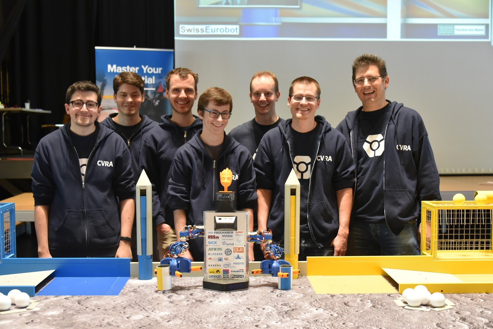
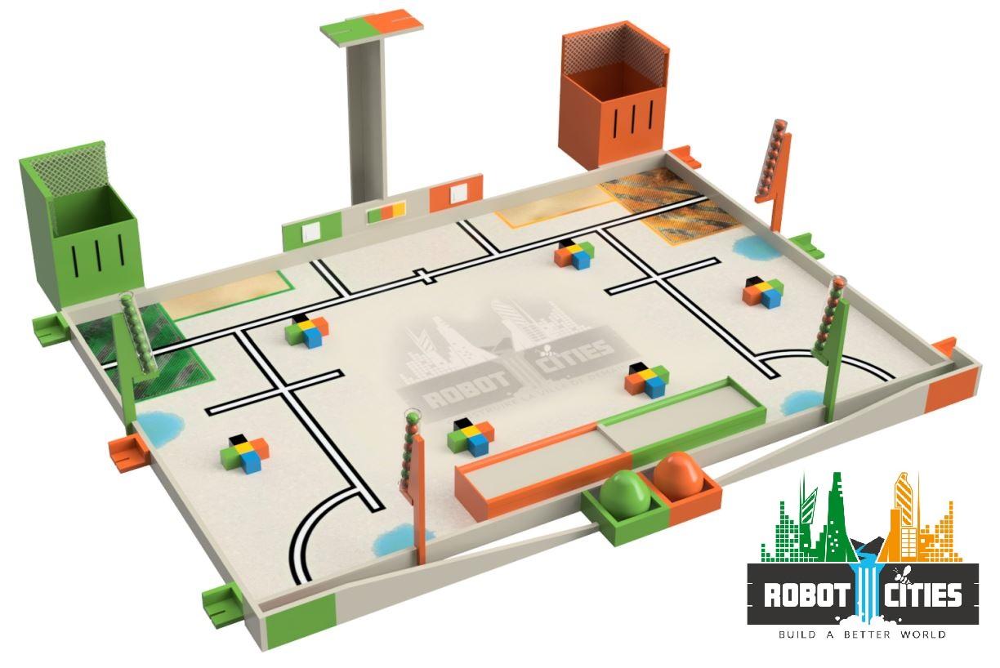

As every year we took part in the Eurobot 2017 contest, held in Yverdon-les-Bains, Switzerland. We entered the contest with one robot: Debra, in its 7th iteration. Some reliability issues prevented our robot from reaching its full potential, we finished 9th.
You can read more about what we did in the 2017 page.

This year's goal is to make robots build a better city. Your mission, should you accept it, will consist of:
More details about the new contest in the rules.